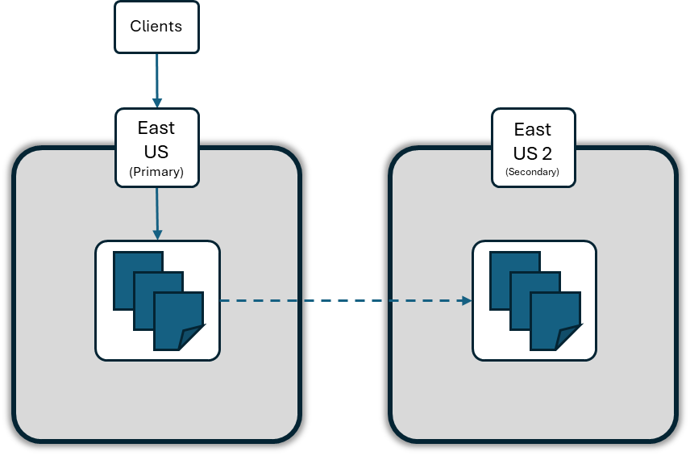

Choose the messaging model from the workload semantics first, then validate payload size, delivery, scale, protocol, networking, and operational requirements.
Architecture~35 minModule 2 of 11
Start with the communication contract
The most important design decision is what the producer means by sending data. Do not select a service from throughput alone.
Contract
Producer intent
Consumer behavior
Typical Azure choice
Command or message
Requests work and expects controlled processing.
Completes, abandons, defers, or dead-letters an individual item.
Service Bus
Discrete event
Announces that a fact occurred without directing a specific action.
Reacts independently through push delivery and filtering.
Event Grid
Event stream
Appends telemetry or a sequence of observations.
Reads an ordered partition using its own cursor and can replay retained data.
Event Hubs
Simple task
Adds inexpensive background work with minimal broker semantics.
Polls, processes, and deletes a small message.
Queue Storage
Live connection
Needs bidirectional request/response traffic rather than buffered messaging.
Maintains a relayed socket to a service behind a firewall.
Relay
Important: At-least-once delivery can produce duplicates. Design consumers to be idempotent even when the selected service offers duplicate detection.
Architecture guide for each technology
Azure Service Bus
Choose for: enterprise commands and business messages that need queues or topics, settlement, transactions, sessions, dead-lettering, scheduling, deferral, duplicate detection, TTL, or JMS/AMQP interoperability.
Architecture watch: model entity boundaries, payload and property size, lock duration, retry ownership, ordering keys, duplicate windows, DLQ recovery, tier and protocol limits, and peak broker load.
Azure Event Grid
Choose for: reactive integration where Azure resources or custom publishers announce discrete facts to one or many push-based handlers.
Architecture watch: CloudEvents schemas, event size and 64-KB billing increments for Basic custom and domain topics, subject and event-type filters, endpoint validation, retry and expiration policy, dead-letter storage, handler idempotency, and no global ordering assumption.
Azure Event Hubs
Choose for: high-volume telemetry, logs, clickstreams, or change feeds consumed as a partitioned, replayable stream through AMQP or Kafka-compatible clients.
Architecture watch: publication size, partition keys and count, consumer groups, checkpoints, retention, throughput capacity, Capture to storage, and downstream stream processing.
Azure Queue Storage
Choose for: low-cost, very large task backlogs when polling and basic visibility-timeout processing are enough.
Architecture watch: 64 KiB message limits, poison-message handling in the application, visibility renewal, dequeue counts, payload references, and the absence of topics, transactions, sessions, and broker-managed DLQs.
Azure Relay and Hybrid Connections
Choose for: securely exposing an on-premises service through outbound connections when VPN or virtual network integration is impractical.
Architecture watch: this is live relayed connectivity, not durable messaging. Plan authentication, connection lifetime, load distribution, latency, and behavior when either endpoint disconnects.
Payload size can change the service or tier
Measure the serialized body together with its envelope and properties, and test representative peak-size data. A payload that fits one tier or protocol can be rejected by another, while larger events consume more throughput and can increase cost.
Technology
Current size limit
Selection consequence
Service Bus
256 KB in Basic and Standard. Premium defaults to 1 MB per entity and can be configured up to 100 MB for a single AMQP message; HTTP and batches remain limited to 1 MB.
Payloads above 256 KB require Premium with the correct entity setting and protocol, or a claim-check design. Include system and user properties in the size budget.
Event Grid
1 MB per event; the limit cannot be increased. Event Grid namespace batches are also limited to 1 MB.
Use events as compact fact notifications. For Basic custom and domain topics, events are metered in 64-KB increments, so payload growth also affects cost and throughput.
Event Hubs
Maximum publication size is 256 KB in Basic, 1 MB in Standard and Premium, and 20 MB in Dedicated. The limit applies to either one event or the entire batch.
Choose a tier that fits the encoded publication and throughput profile. Do not assume batching permits a larger total publication.
Queue Storage
64 KiB per message.
Suitable only when the task body or a reference to it fits this limit; encoding can increase the transmitted size.
Relay
Relay is live connectivity rather than a durable message store; limits vary by Relay offering and transport.
Select Relay for the connectivity contract, then validate request and transport limits separately. It is not a workaround for oversized durable messages.
For oversized payloads: Apply the claim-check pattern: store the body in Blob Storage and send a small message or event containing an immutable reference, content type, length, checksum, correlation ID, and expiry information. Protect the blob with managed identity and least-privilege RBAC, align its retention with message retries and DLQ recovery, and delete it only after processing is safely complete.
Service Bus architecture checklist
The slide deck provides a broad feature inventory. Turn that inventory into explicit design decisions before implementation.
Decision area
Questions to resolve
Topology
Queue or topic? How many subscriptions? Which filters and actions? Is auto-forwarding creating an intentional processing pipeline?
Delivery and ordering
Can consumers tolerate duplicates? Is strict per-key ordering required? If so, define session IDs, session state, and concurrency.
Temporal control
Set message TTL, lock duration, retry policy, scheduled enqueue behavior, and deferral retrieval strategy.
Failure handling
Define max delivery count, DLQ alerts, poison-message ownership, inspection, repair, replay, and audit requirements.
Atomicity and size
Are transactions required? What are the average, 95th-percentile, and maximum serialized sizes including properties? Can batching improve efficiency without exceeding its 1-MB limit? Use Premium large-message support only when justified; otherwise use claim check.
Capacity and tier
Estimate ingress, egress, concurrent connections, entity count, and burst behavior. Decide whether partitioning or Premium messaging units and dedicated isolation are required.
Protocol and clients
Use AMQP SDKs by default. Confirm JMS version and feature support against the selected tier; use HTTP only where its tradeoffs are understood.
Security and network
Prefer managed identity and least-privilege data-plane RBAC. Decide on private endpoints, firewall rules, key rotation, and diagnostic retention.
Availability and regions
Use availability-zone support where offered. Distinguish namespace metadata disaster recovery from geo-replication of message data, then document failover and producer/consumer recovery.
Queue and topic processing strategies
Producer count, receiver count, and subscription count solve different architecture problems. Decide who owns the message contract, whether each downstream capability needs its own copy, and where processing can safely run in parallel.
Single or multiple producers
Pattern
Choose it when
Design implications
Single producer
One application owns the command or event contract and its publishing lifecycle.
Contract governance, authorization, tracing, and capacity attribution are simpler. The producer can still run as several scaled instances.
Multiple producers, shared entity
Several applications publish the same business contract to the same queue or topic.
Use a shared schema, stable message identity, correlation metadata, idempotent retry behavior, and least-privilege send access. There is no global ordering guarantee across concurrent producers.
Separate entities per producer or contract
Workloads have different owners, schemas, security boundaries, retention, scaling, or failure-isolation requirements.
Avoid creating an entity for every producer by default. Separate entities only when the operational boundary is real, then route or aggregate downstream deliberately.
Ordering note: Sessions preserve ordered handling within a session after Service Bus accepts the messages. They do not establish the intended business order when multiple producers race to send for the same session. If that order matters, coordinate sequencing at the producer or workflow boundary.
Single receiver or competing receivers
Pattern
Delivery behavior
Choose it when
One receiver on a queue
One process handles available messages, although it can still use internal concurrency.
Processing volume is modest or the handler must be deliberately constrained. A single receiver alone is not a complete ordering guarantee because retries, abandonment, deferral, and lock loss can change observed order.
Multiple receivers on one queue
Receivers compete for messages. Each message is locked by one receiver at a time, so work is distributed rather than copied.
You need horizontal scale or availability. Make handlers idempotent, tune concurrency and prefetch, renew locks for long work, and scale from queue depth, message age, processing latency, and failure rate.
Multiple topic subscriptions
Each matching subscription receives its own copy and maintains independent delivery, retry, and dead-letter state.
Different business capabilities must process the same event independently. Give each capability its own subscription, filters, permissions, scaling policy, and DLQ ownership.
Multiple processors on one subscription
Processor instances compete for that subscription's messages; they do not each receive a copy.
One subscriber capability needs more throughput or resilience. Scale and monitor it like a queue, independently from processors attached to other subscriptions.
Session-aware processors
One receiver owns the lock for a session at a time, preserving ordered handling for that session while other receivers process different sessions concurrently.
You need per-customer, per-order, or per-aggregate ordering without reducing the entire entity to one serial processing lane. Choose a session key with enough cardinality to distribute load.
Pattern matrix
This matrix lists the meaningful topology combinations. "Multiple" means independently deployed applications, scaled instances, or both.
Entity
Producers or publishers
Subscriptions
Receivers or processors per path
Result and typical use
Queue
One
N/A
One
One contract owner and one processing lane. Choose for modest volume or deliberately constrained handling.
Queue
One
N/A
Multiple
One producer workload distributed across competing receivers for throughput and availability.
Queue
Multiple
N/A
One
Several producers feed one serialized processing lane. The receiver can become a bottleneck, and producer send order is not a business ordering guarantee.
Queue
Multiple
N/A
Multiple
Fan-in with competing consumers. Choose for shared contracts and scalable work distribution.
Topic
One
One
One
One publisher and one subscriber capability. Useful when future fan-out is expected or topic filtering is still valuable.
Topic
Multiple
One
One or multiple
Several publishers share one event contract; one subscriber capability processes the matching stream and can scale with competing processors.
Topic
One
Multiple
One or multiple per subscription
Classic fan-out. Every matching subscription gets a copy, and each subscriber scales independently.
Topic
Multiple
Multiple
One or multiple per subscription
Shared event backbone with fan-in and fan-out. Use strong contract governance, filters, ownership, capacity planning, and per-subscription DLQ operations.
Sessions are an ordering overlay: Apply sessions to any queue or subscription row when messages require ordered, exclusive processing per key. Multiple session-aware processors can still run concurrently by owning different sessions.
How to choose: Add receiver instances to increase throughput for one workload. Add subscriptions when separate workloads each need a copy. Do not add subscriptions merely to scale one consumer group.
Scale the Service Bus workload
Scaling Service Bus requires coordinated decisions at the namespace, messaging topology, and application layers. More broker capacity cannot fix a slow handler, and more processors cannot remove namespace throttling.
Scaling layer
Primary controls
Use when
Watch for
Namespace capacity
Premium messaging units (MUs), configured manually or with Azure Monitor autoscale
Namespace CPU or memory is sustained at a high level, requests are throttled, or predictable latency requires isolated capacity.
Premium supports 1, 2, 4, 8, or 16 MUs. Scaling is not instantaneous, throughput might not increase linearly, and all entities share the namespace capacity.
Messaging topology
Partitioned Premium namespaces, entity design, subscription filters, and separate Premium namespaces where justified
A single capacity pool or topology has reached a practical limit, or workloads need independent isolation and ownership.
Sessions, fan-out, filters, scheduling, transactions, duplicate detection, and forwarding consume broker compute. More entities alone do not guarantee more throughput.
Processor instances
Scale out competing receivers for each queue or subscription
Backlog or message age grows while namespace capacity remains healthy and handlers have available downstream capacity.
Idempotency, lock renewal, downstream rate limits, hot session keys, deployment churn, and uneven work distribution.
Each application instance has spare CPU, memory, and downstream capacity but is not consuming messages fast enough.
Excess concurrency can overload dependencies. Excess prefetch can hold locked messages longer than the handler can safely process them.
Manual scale and custom autoscale
Messaging units apply to the entire Premium namespace. In the Azure portal, open the namespace and select Scale. Use Manual scale for fixed or carefully controlled capacity, or Custom autoscale to set minimum, maximum, and default MUs with metric-based and scheduled conditions.
Define scale-out rules for both CPU and memory. A practical starting point is to add capacity before CPU remains above approximately 70-75%, and Microsoft recommends scaling up at 60% memory because cached messages can make memory rise quickly.
Use a lower scale-in threshold than the scale-out threshold to prevent oscillation. For example, a 75-80% scale-out threshold can be paired with a scale-in threshold below 40%.
Use a short evaluation window for scale-out and a longer cooldown for scale-in. Microsoft recommends a scale-in cooldown longer than 30 minutes for spiky workloads.
Pre-scale for known peaks with an additional scheduled condition. Autoscale metrics can be 5-10 minutes old, so reactive rules alone might not absorb a sudden burst.
Review Run history and configure notifications so operators can see failed, delayed, or unexpected scaling actions.
Important: Service Bus autoscale changes Premium messaging units; it does not create more application processors. Configure your compute platform to scale queue and subscription processors separately, using backlog and processing health signals.
Pricing implications
Premium capacity is billed by messaging unit and hour. Scaling from 2 to 4 MUs increases the namespace capacity charge for the hours in which the additional MUs are allocated. Use the current regional price from the Azure pricing page or pricing calculator rather than treating an example rate as permanent.
Single-region capacity cost: cost = configured MUs x billable hours x regional hourly MU rate
Geo-Replication provisions every replica with the same MU count as the primary. A primary with 4 MUs and one secondary therefore runs 4 MUs in each region, for 8 MUs of billed capacity. Only the primary accepts normal client traffic, but the hot-standby capacity in the secondary is still provisioned and billed.
Geo-Replication cost: total cost = sum of (MUs x hours x regional MU rate) for every replica + (replicated GB x data-transfer rate)
Configuration
Billed capacity
Equation
4 MUs, one region
4 MUs
4 x hours x regional MU rate
4 MUs, primary plus one secondary
8 MUs total: 4 per region
(4 x hours x primary-region rate) + (4 x hours x secondary-region rate) + replication transfer
Autoscale from 4 to 8 MUs with one secondary
16 MUs total while scaled out: 8 per region
(8 x hours x rate for each of 2 replicas) + replication transfer
If all replicas use the same hourly MU rate, the capacity portion can be simplified to replica count x configured MUs x hours x hourly MU rate. Replicated-data transfer is charged separately according to the zone containing the primary region at the time of replication. Promotion swaps primary and secondary roles; it does not reduce the replica count or capacity charge. Removing the secondary removes its future replica capacity and replication-transfer charges.
Measure before and after scaling
Signal
Likely constraint
Response to test
High namespace CPU or memory, throttled requests, or rising server latency
Broker capacity
Increase Premium MUs or adjust autoscale, then repeat the same representative load test.
Growing active-message backlog while namespace CPU and memory remain healthy
Consumer capacity or a slow downstream dependency
Inspect handler latency and errors, then increase processor instances or concurrency only if downstream systems can absorb the load.
One session grows while other receivers are idle
Hot session key
Redesign the session key or workload boundary. More receivers cannot process one session concurrently.
Lock loss or repeated redelivery after increasing concurrency or prefetch
Too much work reserved per processor
Reduce prefetch or concurrency, shorten handler work, and confirm lock renewal and settlement behavior.
Throughput stops improving as MUs increase
Entity, storage, network, client, or downstream bottleneck
Profile end to end. Consider a partitioned Premium namespace or sharding independent workloads across Premium namespaces only after measurement confirms the boundary.
Benchmark with representative message sizes, subscription fan-out, filters, sessions, transactions, retries, and settlement behavior. A simple benchmark without these features is useful as a baseline, not as a production capacity promise.
Partitioning and messaging units solve different problems
Partitioning changes the namespace's broker and storage topology. Messaging units change how much dedicated compute and memory a Premium namespace receives. They work together, but increasing one is not equivalent to increasing the other.
Architecture concern
Partitioning
Messaging units
What it provides
Independent message brokers and stores that distribute queues, topics, and message traffic.
Remove a single broker or store as the topology boundary and distribute a workload across multiple partitions.
Respond to high namespace CPU or memory, throttling, connection pressure, or latency requirements.
Premium configuration
Choose 1, 2, or 4 namespace partitions when the namespace is created. Every entity in a partitioned Premium namespace is partitioned.
Choose 1, 2, 4, 8, or 16 MUs. Scale manually or with Azure Monitor autoscale after namespace creation.
Relationship
The partition count determines how many broker-and-store shards receive capacity.
The MU count must be a multiple of the partition count and is divided evenly among the partitions.
Change later?
No. Premium partitioning and its partition count are creation-time decisions.
Yes. MUs can scale up or down within the supported values.
Cost effect
Partitions are not a separate billing meter, but more partitions require a compatible minimum MU count. Four partitions therefore require at least four MUs.
Premium capacity is billed by provisioned MU and hour, including capacity provisioned for Geo-Replication replicas.
How Premium distributes MUs
Namespace configuration
Capacity per partition
Architecture interpretation
1 partition, 4 MUs
4 MUs on one partition
More compute behind one broker-and-store topology boundary.
2 partitions, 4 MUs
2 MUs per partition
Compute and message traffic can be distributed across two boundaries.
4 partitions, 4 MUs
1 MU per partition
The minimum four-partition configuration favors distribution over compute concentration.
4 partitions, 8 MUs
2 MUs per partition
Distribution across four boundaries with additional compute assigned to each.
Hot-key constraint:SessionId, an explicit PartitionKey, and other consistency features can pin related messages to one partition. Adding total namespace MUs does not spread one hot key across partitions. Choose keys with enough cardinality, measure distribution, and add MUs only when the partition receiving that traffic also needs more compute.
How to choose
Add MUs when Premium namespace CPU or memory is high, requests are throttled, or measured broker capacity is the limiting factor.
Choose multiple partitions when the design needs broker-and-store distribution, aggregate scale beyond one partition, or better workload spread. Decide this before namespace creation.
Use both for large Premium workloads that need distribution and more compute per partition. Benchmark the intended partition count, MU count, keys, sessions, filters, and fan-out together.
Scale processors separately when backlog grows while namespace health remains good. Neither partitions nor MUs create more application receivers.
Standard-tier distinction: Standard uses entity-level partitioning selected when each queue or topic is created. Enabling it creates 16 partitions for that entity, but Standard still uses shared service capacity and has no messaging units. Premium uses namespace-level partitioning, so all entities inherit the namespace decision.
Geo-Replication
Geo-Replication is the Service Bus feature for keeping metadata and message data synchronized across regions. Use it when you need the namespace itself to continue in a secondary region with the same queues, topics, subscriptions, filters, and message state after a promotion.
Important: Geo-Replication is a Premium-tier feature and it uses a primary-secondary model. You use the namespace hostname in your client code, and Azure routes traffic to the current primary region.

Primary and secondary regions replicate namespace data so you can promote a secondary region when needed.
Choose synchronous replication for the strongest data assurance, or asynchronous replication when lower latency matters more and some lag is acceptable.
Capacity and pricing
Every replica runs with the same Premium MU count as the primary and is billed for that capacity. One primary and one secondary configured for 4 MUs provide 4 MUs per region and incur 8 MUs of capacity charges in total, plus replicated-data transfer charges.
Promotion
You manually promote a secondary region. Planned promotion waits for lag to catch up; forced promotion switches immediately and can lose unreplicated data.
Region selection
Choose a secondary region close to the primary when possible to reduce lag. If you use Geo-Replication for availability, same-continent pairing is usually the safer default.
Monitoring
Watch the replication lag metrics and alert before lag reaches the configured maximum, because the primary starts throttling requests when that limit is hit.
Limits and cautions
Geo-Replication cannot be combined with Geo-Disaster Recovery, supports only a single secondary region, and does not currently support large messages. Verify the current preview and regional limits before you depend on it.
For architecture work, treat Geo-Replication as a continuity decision rather than a cosmetic setting. It affects failover planning, private endpoints, region choice, promotion runbooks, and the way you test recovery scenarios.
Technology comparison
Technology
Primary model
Delivery shape
Ordering and replay
Avoid when
Service Bus
Brokered messages and pub/sub
Pull or processor callback with settlement
Sessions provide ordered groups; messages are removed after settlement
You need a high-volume retained event log
Event Grid
Discrete event notification
Push fan-out to handlers
No ordering guarantee; retries are for delivery, not stream replay
The publisher needs command completion or transactions
Event Hubs
Partitioned append-only stream
Consumers read with independent cursors
Ordered within a partition and replayable during retention
Each item needs broker settlement, DLQ, or workflow semantics
Queue Storage
Simple work queue
Polling with visibility timeout
Best-effort order; no pub/sub replay model
You need sessions, topics, transactions, or broker-managed DLQ
Relay
Relayed socket or request/response
Live bidirectional connection
No durable buffer or replay
Endpoints must be decoupled in time
Compose when needed: A solution can use several technologies. For example, Event Grid can notify that a blob arrived, Service Bus can coordinate reliable processing, and Event Hubs can carry operational telemetry. Keep each contract explicit.
Architect decision tree
Start from communication semantics. After reaching a candidate, verify that the maximum serialized payload fits its tier, protocol, and batch limit, then apply cost, throughput, network, regional, and compliance constraints.
flowchart TD
A{Must data survive while sender or receiver is offline?}
A -->|No| B{Need a live connection to a service behind a firewall?}
B -->|Yes| R[" Azure Relay"]
B -->|No| X[Use a synchronous API or another connectivity service]
A -->|Yes| C{Is this a replayable stream of telemetry or many observations?}
C -->|Yes| EH[" Azure Event Hubs"]
C -->|No| D{Is it a fact notification with push fan-out to handlers?}
D -->|Yes| EG[" Azure Event Grid"]
D -->|No| E{Need topics, transactions, sessions, DLQ, scheduling, or JMS?}
E -->|Yes| SB[" Azure Service Bus"]
E -->|No| F{Is a low-cost polled task queue with basic semantics enough?}
F -->|Yes| SQ[" Azure Queue Storage"]
F -->|No| SB
classDef question fill:#e6f2fb,stroke:#0078d4,color:#10243a,stroke-width:1.5px;
classDef result fill:#e7f5e7,stroke:#107c10,color:#12351a,stroke-width:1.5px;
classDef other fill:#fff3e3,stroke:#b86100,color:#4a2b00;
class A,B,C,D,E,F question;
class R,EH,EG,SB,SQ result;
class X other;